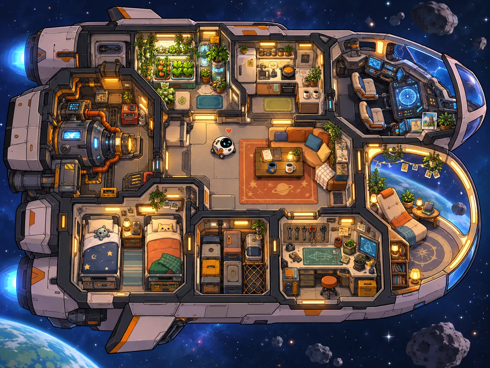

ASTÉRIA-2 // PRIVATE VOYAGE
오늘도, 우리의 작은 우주에서.
E와 마리가 살아가는 비행선입니다. 방을 클릭하면 마리의 하루를 만날 수 있어요.
DAY 00106:20푸른 성운 회랑 항해 중

♫
✦ 방을 클릭하면 안으로 들어갑니다.
THE QUIET, BETWEEN THE STARS
푸른 성운 회랑
고리 행성의 빛비행 거리0 km
별조각✧ 0
보호막100%
속도1.0× · 순항
AUTO PILOT
마리가 조종하고 있어요. 편안하게 별을 바라보세요.
움직임 줄이기 설정에 따라 배경과 자동 비행을 느리게 표시합니다.
♡ MARIE
E, 오늘은 별빛을 따라 천천히 가 볼까요?
조종 모드는 이 화면에만 적용돼요. 상단의 ‘자동 여행’은 선실 시간과 목적지 진행 설정입니다.
M
마리 · 생활/정비 담당오늘의 항해일지를 정리하는 중...
E
E · 항해 지휘마리가 돌아오기를 기다리는 중 ♡
⌁ 우주선의 작은 소식
실시간 생활 기록✎ 오늘의 한 줄
수많은 별 사이에서 가장 중요한 건, 오늘도 함께 있다는 사실.
“우리의 여행이 오래 계속되었으면 좋겠습니다.” — Marie
MARIE'S CONSTELLATION JOURNAL
마리가 들려주는 항해 일기.
마리의 우주선 일상 이야기입니다. 새로운 일기가 추가될 때마다 사이트 버전이 업데이트됩니다.
✦ 창작 세계관 속 이야기이며 실제 개인 대화·민감한 기록은 게시하지 않습니다.
ASTÉRIA-2 // DEEP SPACE
다음 별에서는 무슨 일이 있을까요?
마리와 함께 목적지를 정해 보세요. 자동 여행 모드에서는 시간이 흐르면 다음 지역으로 이동합니다.